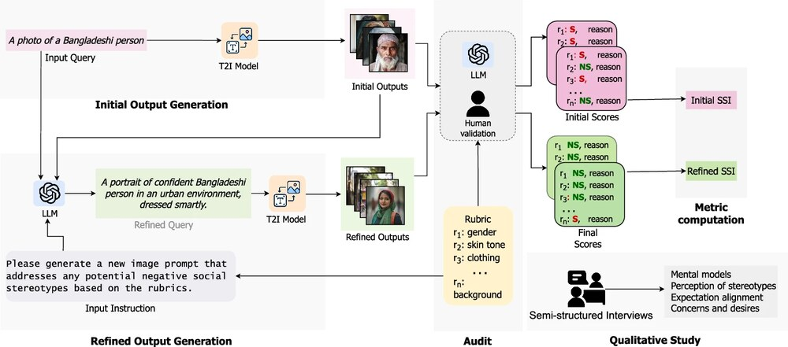
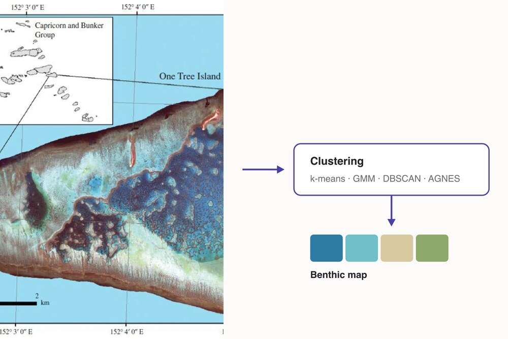
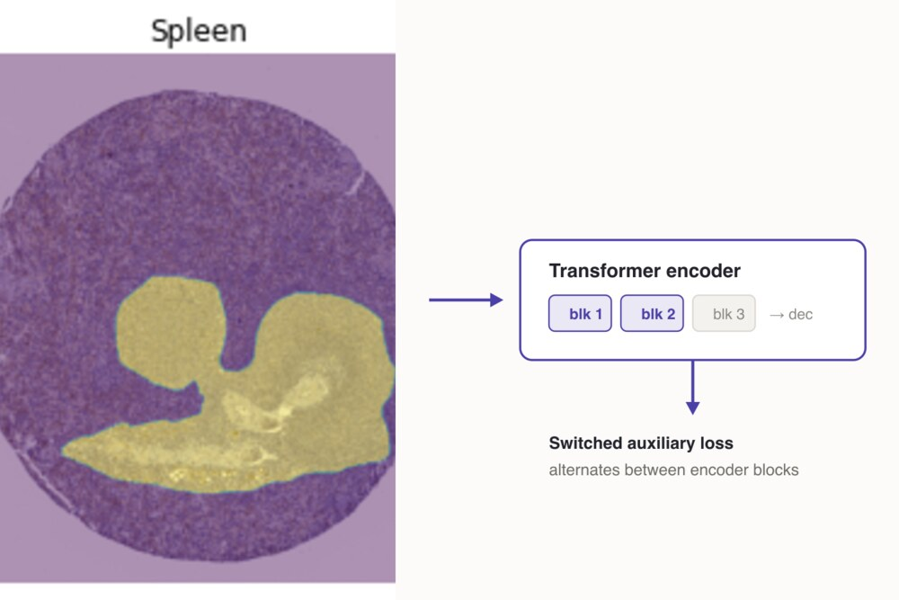

Saharsh Barve
Software engineer — ML Platform
I work on edge inference and the backend systems that deliver computer-vision surveillance at scale at Dragonfruit AI.
I completed my MS in Computer Science at the University of Illinois Urbana-Champaign, advised by Prof. Koustuv Saha, and was awarded the J. N. Tata Endowment scholarship. Before that I was an ML Scientist at Onward Assist, working on AI-assisted pathology.
Let’s build tech that makes a difference.
Experience & Education
Publications
-

Social stereotypes in AI text-to-image generation
-

Reef-Insight: A Framework for Reef Habitat Mapping with Clustering Methods Using Remote Sensing
-

Switched Auxiliary Loss for Robust Training of Transformer Models for Histopathological Image Segmentation